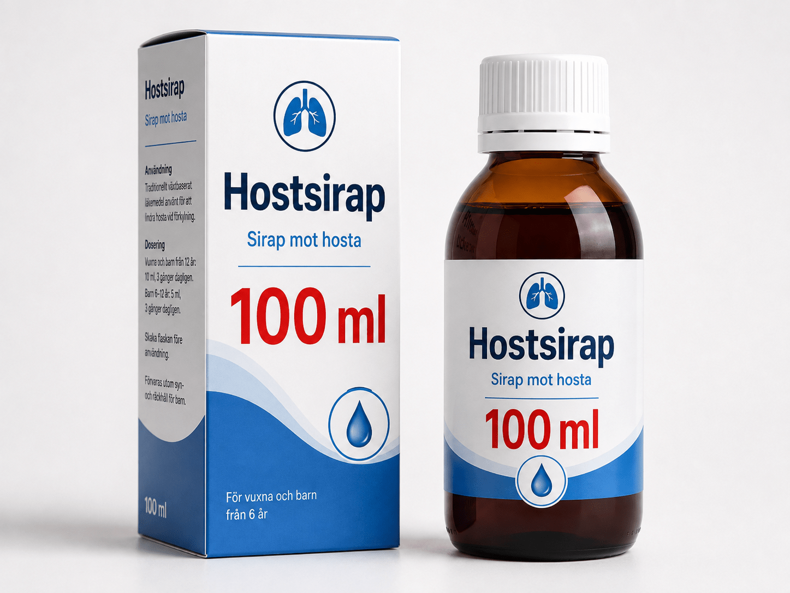
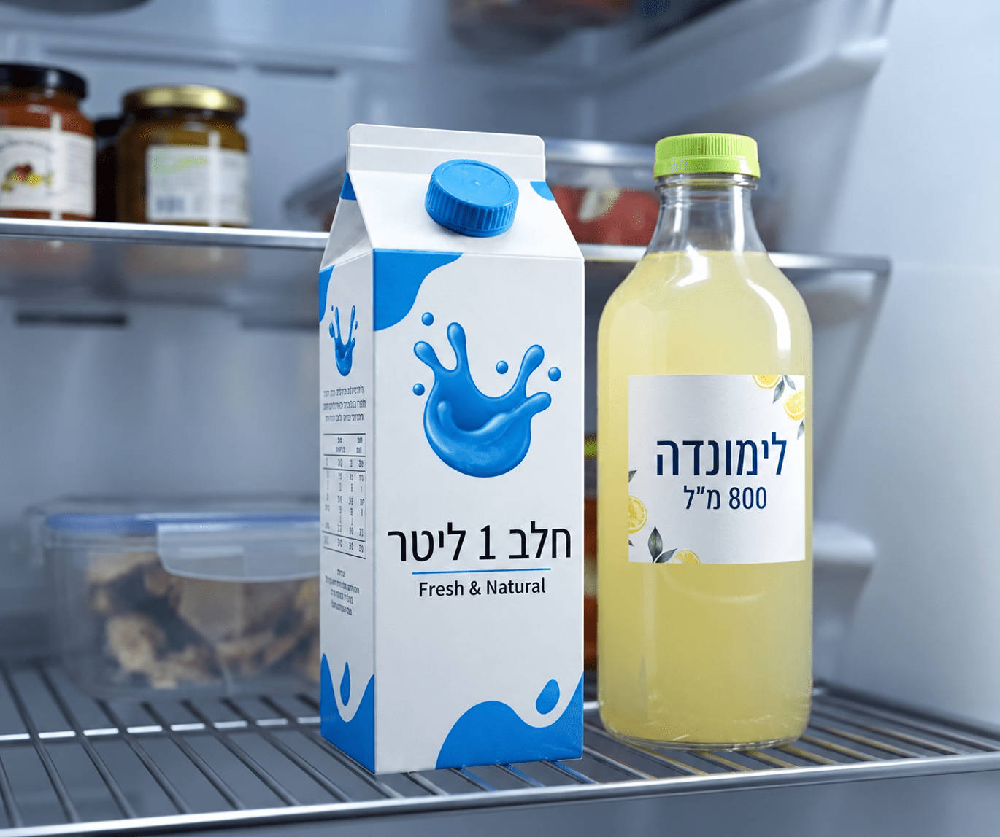
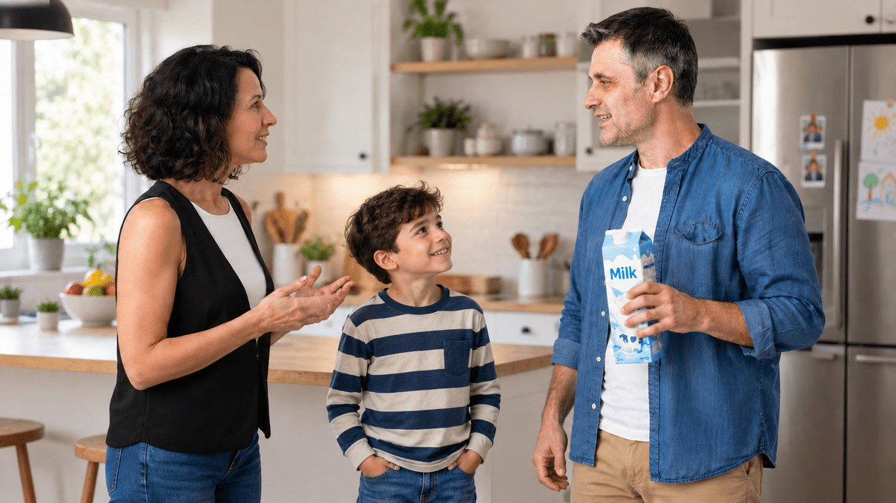
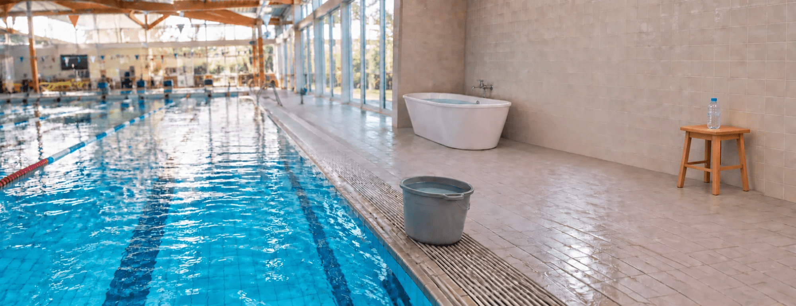

أنهينا مرحلة التعلم، سننتقل إلى التمرين الأول ونجيب عن
6 أسئلة
يجب الإجابة بشكل صحيح عن 4 أسئلة على الأقل.
اسحبوا الكلمات المناسبة لإكمال الفقرة:
في الماضي، استخدمت أماكن مختلفة في العالم وحدات قياس .
هكذا كان من الصعب ، ومقارنة النتائج وتبادل المعرفة.
في عام 1795، ابتُكر في فرنسا النظام ، والهدف منه تمكين القياس .
هذا النظام يستخدم وحدات قياس معروفة حتى اليوم (مثل المتر، والغرام).
شركة أدوية في سويسرا تُنتج شرابًا وترسله إلى الصيدليات في 40 دولة.
مكتوب على كل قنينة: 100 مل.
ما هي ميزة استخدام النظام المتري في هذه الحالة؟

في الثلاجة توجد قنينة عصير ليمون وعلبة حليب.
على قنينة عصير الليمون مكتوب 800 مل. على علبة الحليب مكتوب 1 لتر.
أجروا عمليات التحويل، وأكملوا الجمل.

انظروا إلى الصورة واقرأوا فقاعات الكلام.
من المحق – الأم أم الأب؟

اشتريت 2 لتر من الحليب
تقصد أنك اشتريت 2,000 مل من الحليب
اسحبوا وحدات القياس إلى أماكنها المناسبة

كيف نقيس حجم الأجسام التالية؟
اسحبوا كل جسم إلى طريقة القياس المناسبة له.
القياس وفق أبعاد الجسم (الطول × العرض × الارتفاع)
القياس بأداة قياس مدرَّجة